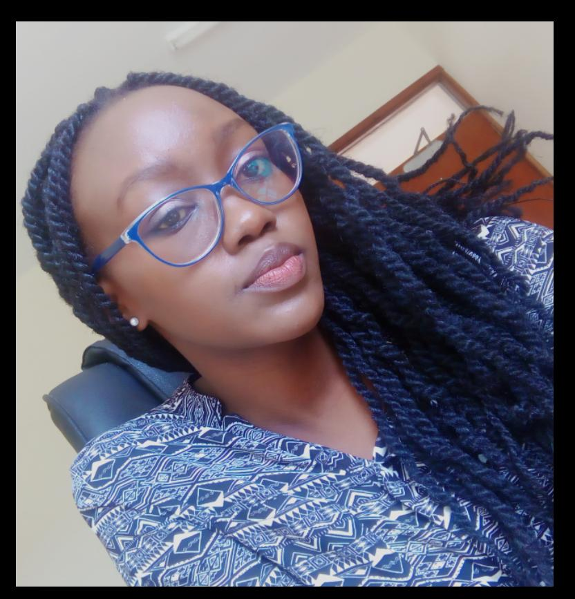

Tabitha Ngumu

SUMMARY
I am a self driven individual who thrives in setting goals and achieving them
while facing challenges that arise head on.
EDUCATION
- Bachelor of Science in Human Resource Management
- Moi Univerity-Kenya
Work Experience
- Human Resource Officer at Transbyte –remote
- Educate and be a resource for questions regarding employee benefits.
- Responsible for leading the recruiting, hiring and onboarding process
- Lead employee related investigations
- Be available, approachable, and responsive to all employee inquiries and requests.
- Role model and coach employees
- Human Resource Officer at Machakos Technical Institute for the Blind:
- Data Entry and reporting in the HRIS and Benefit Management systems
- Manage timekeeping system
- Assist with compensation, benefits, workers’ compensation,wage surveys,
improvement projects with direction from Human Resources Manager.
- Conduct New Employee Orientation
- Track requisitions to hire.
- Assistant administrator at Daystar University
- Scheduling meetings and appointments
- Ordering and taking stock of office supplies
- Writing and issuing emails to teams and departments
- Supervising work-study students
- Budgeting for the departments needs for the academic year
- Human resource assistant at Daystar University
- Maintaining calendars of HR management team
- Communication and record keeping
- Dispatch of letters to the respective departments
- Calculation of overtime and part time hours
- Maintaining employee confidence
Skills
- Labor laws.
- Google Drive
- MS Office
- Communication
- Leadership
- Conflict resolution
Others
Hobbies
Contact